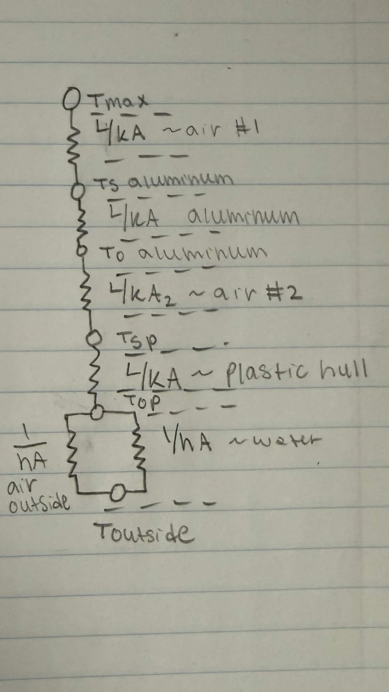
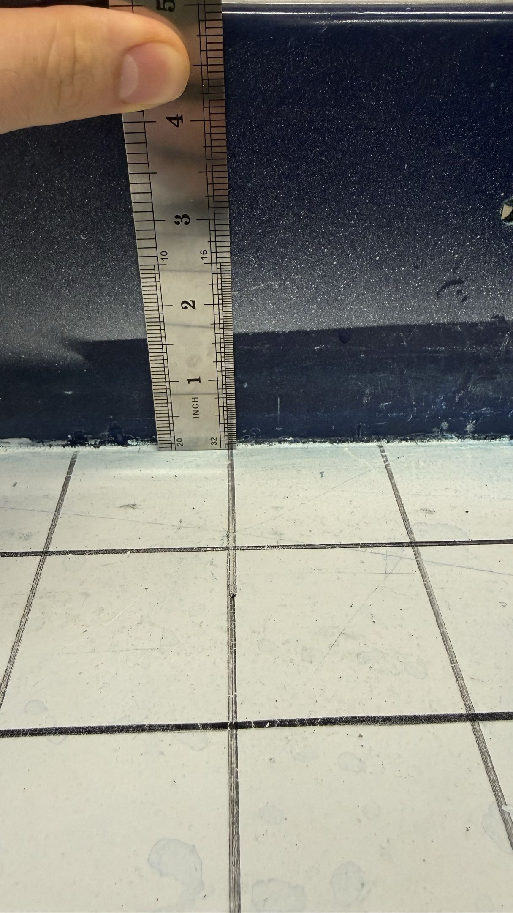
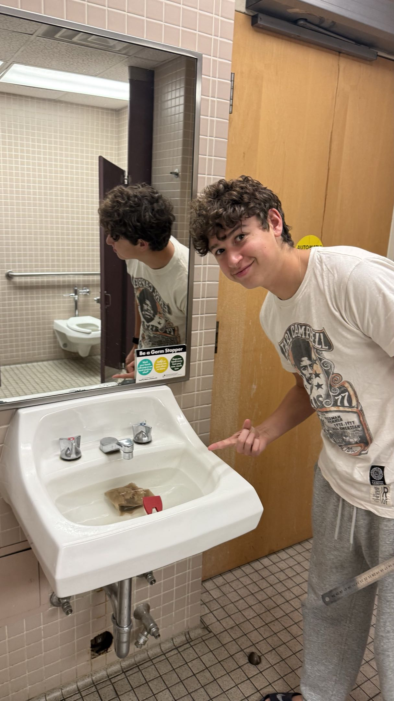

Layered thermal resistance modeling and hull drag optimization through iterative flow visualization testing.
GPUs and power electronics with known wattage are sealed inside an aluminum chassis with limited forced convection. Heat must conduct outward through five distinct layers before reaching the external environment. The core question is not simply whether the system reaches a critical temperature, but when.
A lumped-capacitance model is not valid here. Each layer has different material properties, thickness, and boundary conditions, and these change with time as temperatures evolve. We assume as worst case that the air gap between the aluminum and plastic hull is stagnant: velocity is negligible, convection is suppressed, and this layer must be treated as a conduction resistance.
Heat flows outward from the electronics through five layers in series. Each layer's resistance is evaluated at every timestep as temperatures evolve.
Layers 5a and 5b act in parallel — the external boundary splits between the dry and wetted hull area. The total resistance is the series sum of layers 1 through 4 plus the parallel combination of 5a and 5b. At each timestep, temperature at every layer boundary is updated:
A_wet changes with hull geometry and loading and this links thermal model directly to hull optimization
Iterated at each timestep; k_air updated with temperature, A_wet updated with hull iteration
The MATLAB model steps forward in time, computing the temperature at each layer boundary per timestep using the resistance chain. Inputs are the known electronics wattage, layer geometry, and initial conditions. The solver tracks internal air temperature and flags the timestep at which it reaches the electronics' critical limit.
Because Layer 3 (the air gap) is the dominant resistance, the model is most sensitive to gap thickness. Sensitivity sweeps over gap thickness identify whether a design change (tighter fit or partial fill with a higher-conductivity material) would meaningfully extend safe operating time.

Iterative solver steps through time, computing T at each layer boundary. Output is T vs. time at the internal air node, where NTC thermistors provide ground truth. Sensitivity sweeps over gap thickness and wetted area fraction are run here.
Full transient thermal FEA resolves spatial gradients and hot spots the 1D resistance model cannot capture. This includes the conduction through fasteners, asymmetric heat source placement, and edge effects at layer interfaces.
NTC thermistor traces from field operation are compared against MATLAB and ANSYS predictions. Discrepancies back-calculate effective layer resistances, refining assumptions for future hardware iterations.
Waterline geometry is not only a drag variable. It controls A_wet, the wetted area that sets R₅ᵦ which is the lowest resistance external path. A hull that rides higher or sits asymmetrically reduces the submerged surface available for water-side heat rejection, raising steady-state internal temperature. Hull iteration therefore has simultaneous hydrodynamic and thermal consequences, and both are tracked across iterations.
Two measurements are taken per hull iteration under identical payload and center-of-gravity conditions. A ruler records draft depth, confirming the buoyancy calculation and the A_wet estimate fed into the thermal model. The waterline trace on the hull surface exposes asymmetries and excess wetted area that increase drag.

Draft Measurement: Buoyancy Confirmation
Waterline Trace: Wetted Area ProfileA lower, more uniform waterline reduces wetted area and drag. It also reduces A_wet and raises R₅ᵦ, degrading water-side heat rejection. This tradeoff is tracked explicitly. The thermal model is re-run with the updated A_wet for each hull iteration. This is in progress.
Once the MATLAB model is validated against thermistor data, thermal expansion cycles will feed into a fracture mechanics study of the acrylic-to-aluminum bolt interfaces. Aluminum and acrylic have significantly different coefficients of thermal expansion. There is repeated heating and cooling generates cyclic stress at the fastener holes beyond what the static Goodman analysis captured. LEFM will estimate crack initiation life at those concentrations and establish a maintenance inspection interval.